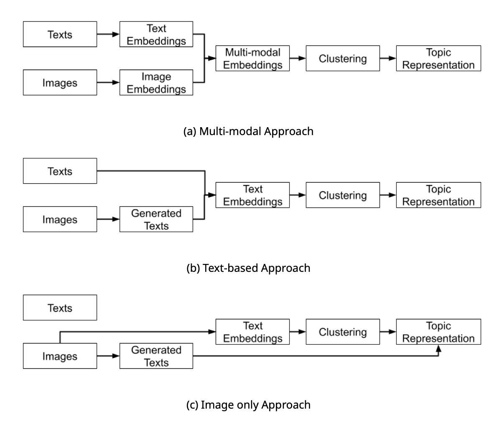

ETMAAL 2024
Image and Text Analysis using
Multi-modal Embeddings
Justin Chun-ting Ho
Marthe Möller
Rhianne Hoek
Amsterdam School of Communication Research

---- Kroon et al. (2023)
Pixels
Credit: Julie Waterhouse Photography; Ultimate-Photo-Tips.com
ImageNet

(Radford et al, 2021)
Is it useful?
Data
- Instagram posts of 44 Dutch green influencer
- 283 posts, 794 images (with caption)
- Coded manually for the themes
Three approaches
Themes
Coverage